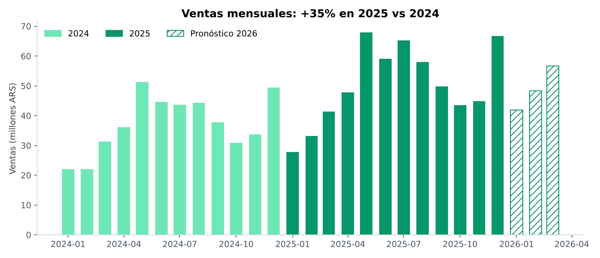
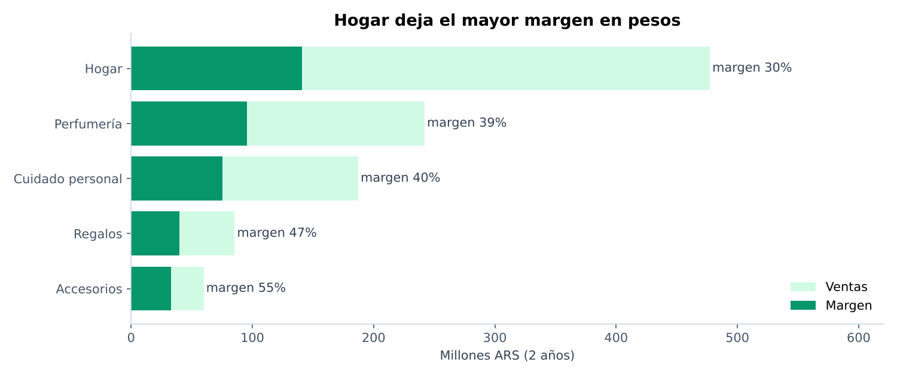
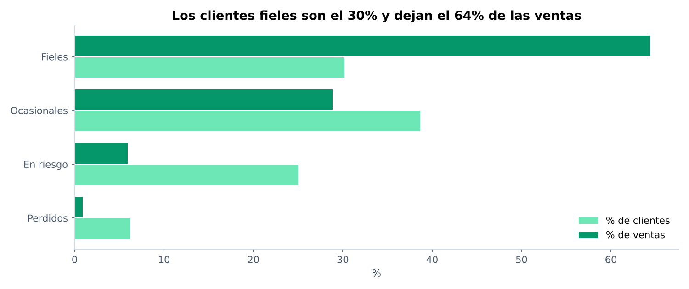
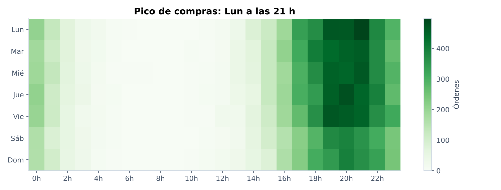

LuSan PRO // data science
Cuánto crece el negocio, qué categorías dejan plata, quiénes son los mejores clientes y cuándo compran. Lo que necesita saber cualquier tienda para decidir dónde poner el esfuerzo.
Datos simulados (23.693 órdenes de 1.716 clientes y 40 productos durante 2024 y 2025). No corresponden a ninguna empresa real.
Ventas por mes con los picos de Hot Sale, Black Friday y diciembre. El pronóstico usa tendencia, estacionalidad y los meses de campaña.

Hogar es la categoría que más margen deja en pesos aunque su porcentaje es el más bajo (30%): vende mucho volumen. Accesorios tiene el mejor porcentaje y vale la pena empujarla.

Agrupé a los clientes por cuándo compraron por última vez, cuántas veces y cuánto gastaron (RFM), con el algoritmo K-means.

El pico es el Lun a las 21 h. Ese es el mejor momento para publicar y mandar promociones.
